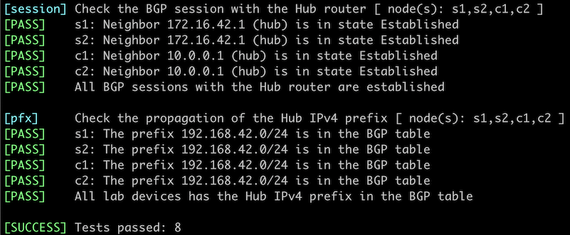

Dynamic BGP Peers
Unless you have a fully automated network provisioning system, configuring BGP neighbors on routers with hundreds or thousands of neighbors can become cumbersome. Fortunately, most BGP implementations support dynamic peers; when configuring them on a BGP router, it accepts any incoming TCP session on port 179 as long as it matches an IP prefix, an IP access-control list, or a prefix list.
Warning
When deployed incorrectly, dynamic BGP peers could become a huge security risk. Use BGP security mechanisms like MD5 passwords and GTSM to stop an intruder from connecting to your BGP router from outside of your network.
Dynamic BGP peers make sense in these scenarios:
- Route reflectors with many clients,
- Route servers,
- Hubs in large VPN deployments,
- Leaf switches running BGP with servers or virtual machines.
In this lab exercise, you’ll configure two types of dynamic peers on a hub router: EBGP peers (spoke sites) and IBGP peers (core routers). We’ll use the same BGP AS number on all spoke sites (see Reuse a BGP AS Number Across Multiple Sites for an explanation of that design decision).

Existing Device Configuration
The routers in your lab use the following BGP AS numbers. Each router router advertises an IPv4 prefix.
| Node/ASN | Router ID | Advertised prefixes |
|---|---|---|
| AS65000 | ||
| c1 | 10.0.0.4 | 10.0.0.4/32 |
| c2 | 10.0.0.5 | 10.0.0.5/32 |
| hub | 10.0.0.1 | 10.0.0.1/32 |
| AS65100 | ||
| s1 | 10.0.0.2 | 10.0.0.2/32 |
| s2 | 10.0.0.3 | 10.0.0.3/32 |
These BGP neighbors are configured in your lab. Please note that the Hub router has no neighbors; you will use the dynamic BGP neighbors functionality to establish BGP sessions with all the other lab routers.
| Node | Router ID / Neighbor |
Router AS/ Neighbor AS |
Neighbor IPv4 |
|---|---|---|---|
| c1 | 10.0.0.4 | 65000 | |
| hub | 65000 | 10.0.0.1 | |
| c2 | 65000 | 10.0.0.5 | |
| c2 | 10.0.0.5 | 65000 | |
| hub | 65000 | 10.0.0.1 | |
| c1 | 65000 | 10.0.0.4 | |
| s1 | 10.0.0.2 | 65100 | |
| hub | 65000 | 172.16.42.1 | |
| s2 | 10.0.0.3 | 65100 | |
| hub | 65000 | 172.16.42.1 |
Hub, C1, and C2 also run OSPF in the backbone area.
Start the Lab
Assuming you already set up your lab infrastructure:
- Change directory to
session/9-dynamic - Execute netlab up (device requirements)
- Log into the Hub router with the netlab connect hub command and verify its IP addresses and OSPF neighbors.
Configuration Tasks
Configuring dynamic BGP neighbors is usually a two-step process:
- Configure a peer group to define the dynamic neighbor’s characteristics. In this lab, you’ll have to define two peer groups, one for IBGP sessions and another one for EBGP sessions.
Tip
Revisit:
- Establish an IBGP Session lab if you have a problem configuring IBGP sessions.
- BGP Session Templates lab if you’re struggling with peer groups.
Also, you might have to activate the peer groups for the IPv4 address family.
- Configure the BGP router to accept incoming TCP sessions on port 179 from an IP address range with a configuration command similar to bgp listen. You’ll have to tie the allowed IP address range to a peer group to tell your router which parameters to use for a dynamic BGP neighbor.
Use the following IP address ranges:
| Address range | Peer group |
|---|---|
| 10.0.0.0/24 | IBGP sessions |
| 172.16.42.0/24 | EBGP sessions with AS 65100 |
Verification
You can use the netlab validate command if you’ve installed netlab release 1.8.3 or later and use Arista EOS, Cumulus Linux, or FRR on S1, S2, C1, and C2. The validation tests check:
- The state of the BGP session between those routers and the Hub router.
- Whether those routers receive the loopback IPv4 prefix from the Hub router.

You can also validate your work on the Hub router:
- Check the state of the BGP sessions with a command similar to show ip bgp summary. You should see four BGP neighbors, two from AS 65000 and two from AS 65100.
hub#show ip bgp summary
BGP summary information for VRF default
Router identifier 10.0.0.1, local AS number 65000
Neighbor Status Codes: m - Under maintenance
Neighbor V AS MsgRcvd MsgSent InQ OutQ Up/Down State PfxRcd PfxAcc
10.0.0.4 4 65000 995 1171 0 0 00:49:36 Estab 1 1
10.0.0.5 4 65000 1678 1971 0 0 01:23:43 Estab 1 1
172.16.42.2 4 65100 1627 1908 0 0 01:21:03 Estab 1 1
172.16.42.3 4 65100 1627 1910 0 0 01:21:03 Estab 1 1
- Check the BGP table on the Hub router with a command similar to show ip bgp. You should see five IPv4 prefixes in the BGP table:
hub#show ip bgp
BGP routing table information for VRF default
Router identifier 10.0.0.1, local AS number 65000
Route status codes: s - suppressed contributor, * - valid, > - active, E - ECMP head, e - ECMP
S - Stale, c - Contributing to ECMP, b - backup, L - labeled-unicast
% - Pending best path selection
Origin codes: i - IGP, e - EGP, ? - incomplete
RPKI Origin Validation codes: V - valid, I - invalid, U - unknown
AS Path Attributes: Or-ID - Originator ID, C-LST - Cluster List, LL Nexthop - Link Local Nexthop
Network Next Hop Metric AIGP LocPref Weight Path
* > 10.0.0.1/32 - - - - 0 i
* > 10.0.0.2/32 172.16.42.2 0 - 100 0 65100 i
* > 10.0.0.3/32 172.16.42.3 0 - 100 0 65100 i
* > 10.0.0.4/32 10.0.0.4 0 - 100 0 i
* > 10.0.0.5/32 10.0.0.5 0 - 100 0 i
Impact of BGP Session Loss
A router using dynamic BGP neighbors usually removes all neighbor-related information once a BGP session with the neighbor is lost. You can shut down a BGP neighbor on one of the other routers to explore how the hub router reacts to the BGP session loss.
Tip
You can use the netlab config command to shut down the BGP session with the Hub router if you’re running Cumulus Linux, FRR, or Arista EOS on the other routers:
- Use
netlab config disable --limit C11 to shut down the BGP session - Use
netlab config enable --limit C1to reenable it.
For example, after shutting down the BGP session with the Hub router on C1, you could observe the following BGP logging messages on the Hub router running Arista EOS:
Bgp: %BGP-3-NOTIFICATION: received from neighbor 10.0.0.4 (VRF default AS 65000) 6/2 (Cease/administrative shutdown) reason:
Bgp: %BGP-5-ADJCHANGE: peer 10.0.0.4 (VRF default AS 65000) old state Established event RecvNotify new state Idle
However, even though the BGP log message claims the BGP neighbor is now in the Idle state, the neighbor is no longer visible in the list of BGP neighbors:
hub#show ip bgp summary
BGP summary information for VRF default
Router identifier 10.0.0.1, local AS number 65000
Neighbor Status Codes: m - Under maintenance
Neighbor V AS MsgRcvd MsgSent InQ OutQ Up/Down State PfxRcd PfxAcc
10.0.0.5 4 65000 1881 2210 0 0 01:33:54 Estab 1 1
172.16.42.2 4 65100 1832 2146 0 0 01:31:15 Estab 1 1
172.16.42.3 4 65100 1832 2147 0 0 01:31:15 Estab 1 1
Warning
Do not use dynamic BGP neighbors if you want to use BGP operational data (for example, show command printouts or SNMP information) to find failed BGP sessions.
Reference Information
The following information might help you if you plan to build custom lab infrastructure:
Device Requirements
- Use any device supported by the netlab BGP and OSPF configuration modules for the lab routers.
- If you run Arista EOS, Cumulus Linux, or FRR on S1, S2, C1, and C2, you can use the netlab config command to turn BGP sessions on or off. You will have to do that manually on other devices.
- You can do automated lab validation with Arista EOS, Cumulus Linux, or FRR running on S1, S2, C1, and C2. Automated lab validation requires netlab release 1.8.3 or higher.
- Git repository contains initial device configurations for Cumulus Linux.
Lab Wiring
Point-to-Point Links
| Origin Device | Origin Port | Destination Device | Destination Port |
|---|---|---|---|
| hub | Ethernet2 | c1 | swp1 |
| hub | Ethernet3 | c2 | swp1 |
| c1 | swp2 | c2 | swp2 |
LAN Links
| Origin Device | Origin Port | Link Name (NET) | Description |
|---|---|---|---|
| hub | Ethernet1 | rs_1 | Carrier Ethernet |
| s1 | swp1 | rs_1 | Carrier Ethernet |
| s2 | swp1 | rs_1 | Carrier Ethernet |
Lab Addressing
| Node/Interface | IPv4 Address | IPv6 Address | Description |
|---|---|---|---|
| c1 | 10.0.0.4/32 | Loopback | |
| swp1 | 10.1.0.1/30 | c1 -> hub | |
| swp2 | 10.1.0.9/30 | c1 -> c2 | |
| c2 | 10.0.0.5/32 | Loopback | |
| swp1 | 10.1.0.5/30 | c2 -> hub | |
| swp2 | 10.1.0.10/30 | c2 -> c1 | |
| hub | 10.0.0.1/32 | Loopback | |
| Ethernet1 | 172.16.42.1/24 | Carrier Ethernet | |
| Ethernet2 | 10.1.0.2/30 | hub -> c1 | |
| Ethernet3 | 10.1.0.6/30 | hub -> c2 | |
| s1 | 10.0.0.2/32 | Loopback | |
| swp1 | 172.16.42.2/24 | Carrier Ethernet | |
| s2 | 10.0.0.3/32 | Loopback | |
| swp1 | 172.16.42.3/24 | Carrier Ethernet |
-
Replace C1 with any other node name if needed ↩